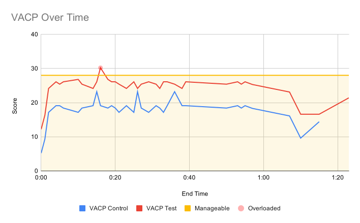
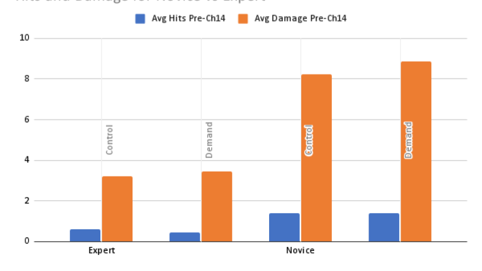

Hades: Cognitive Load & Expert Performance
Measuring attentional load and cognitive workload in expert vs. novice players of the roguelite action RPG Hades.
Cohort study · 12 participants
Overview
Hades is a fast-paced roguelite action RPG by Supergiant Games where players control Zagreus through procedurally arranged chambers, battling enemies in real-time using a 2.5D isometric view. This project examined how adding an attentional demand task — a Serial 3's subtraction challenge — affected gameplay performance across novice and expert players, and whether cognitive overload could reduce an expert to a novice level.
- 5 participants (3 novice, 2 expert)
- 14 chambers per session
- 2 runs per participant
Methodology
All sessions used a fresh file run to standardize starting conditions — same weapon (Stygian Blade), same gods available, and no meta-progression advantages. Each participant played two consecutive runs: a control session with no secondary task, and a demand session with an ongoing Serial 3's subtraction task performed aloud during combat. Gameplay was recorded and coded for hits taken, damage received, subtraction errors, and observed behavioral patterns.
VACP Analysis — We scored each in-game subtask using the Visual, Auditory, Cognitive, and Psychomotor (VACP) scale (max 28). Dodging multiple enemies scored highest at 25.2; entering a chamber scored lowest at 5.2. Adding Serial 3's pushed many tasks above the manageability threshold.
V (Visual) • A (Auditory) • C (Cognitive) • P (Psychomotor)

Serial 3's Task — Players began subtracting 3 from a starting number (50, then +25 each reset) until the room reward appeared. The task drew on working memory and sustained attention — the same cognitive resources needed to track enemies, health, and positioning in combat.

Key Findings
- Experts were not reduced to novice performance — Despite elevated VACP scores during the demand task, expert players maintained consistently lower hits and damage than novices in both conditions. One expert even performed better in the demand run than the control — likely due to a history (warm-up) effect and better boon selection.
- Experts adapted; novices degraded — Novices exhibited frequent defensive and erratic behaviors (excessive attacks, dashing away unnecessarily) throughout every chamber during the demand task. Experts only showed these behaviors at moments of perceivable task difficulty, and recovered more efficiently.
- Different cognitive strategies emerged — Novices relied on physical step-by-step counting, consuming attention throughout. Experts shifted quickly to pattern memorization and rhythmic movement automation, freeing up cognitive resources for gameplay monitoring.
Performance Data

| Group | Hits | Damage | Errors |
|---|---|---|---|
| Expert avg | 0.52 hits/chamber | 3.34 damage/chamber | N/A |
| Expert control | 0.59 hits | 3.23 damage | N/A |
| Expert demand | 0.45 hits | 3.45 damage | 0.64 errors |
| Novice avg | 1.39 hits/chamber | 8.55 damage/chamber | N/A |
| Novice control | 1.40 hits | 8.23 damage | N/A |
| Novice demand | 1.38 hits | 8.87 damage | 1.08 errors |
Note: Chambers 1, 13, and 14 omitted — no enemies or boss skew.
What this suggests for design
Cognitive load behaved like a budget. The VACP scoring made visible how quickly concurrent demands stack: a task that is manageable on its own pushed the whole moment past the threshold once layered onto combat. The same logic applies to any real-time interface. Interruptions such as notifications or tutorial prompts should be scheduled around the user's moment-to-moment load, and the information that matters most should stay legible during the busiest moments.
Novices and experts also need different kinds of relief. Experts protected their performance by automating movement into rhythm, which freed attention for the secondary task. Novices had no automation to lean on and degraded in every chamber. Interfaces serving mixed skill levels can apply the same insight: reduce simultaneous demands by default for new users, and let experienced users opt into density.
Design Implications
Rhythm games that escalate in complexity should expose cognitive load curves explicitly — showing players where they are in the difficulty arc, not just the score. Feedback loops need to distinguish between errors caused by attention failures versus skill gaps; the same wrong note means different things depending on whether the player was tracking the cue at all.
Quotes, Reflections & Team
Novice — "I was spending a lot of effort just sort of keeping the number that I was currently on in my head. The subtraction element was difficult because I really don't enjoy subtracting by 3s — it throws me off a lot."
Expert — "I was falling into more of a rhythm than normal... I was falling into a pattern of movements (dodge–attack–attack–dodge) I know would be less likely to get me injured, because I wasn't able to focus as much on the task."
A key takeaway is the importance of selecting a demand task calibrated to the game's difficulty — Serial 3's hit the right balance for Hades without inducing total task failure. Future research should include more participants, separate control and demand sessions across days to eliminate history effects, and explore how general gaming experience shapes novice performance.
Team
- Nada Elgeziry — Expert vs. novice analysis, participant administration
- Sage Fuentes — Game expertise, pilot testing, data coding, intro & literature
- Erin King — VACP & Serial 3's research, results write-up, video editing
The study was presented to our graduate cohort.